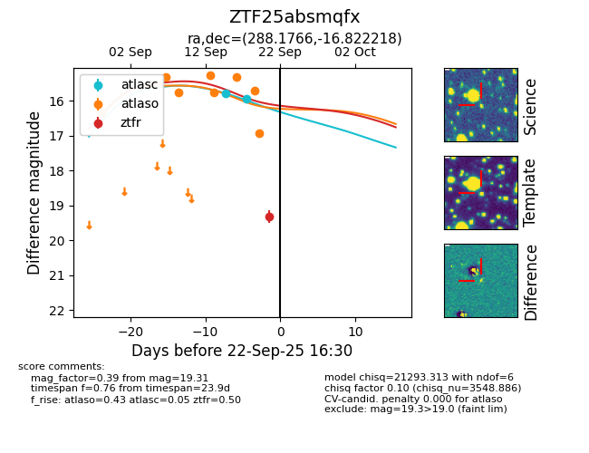
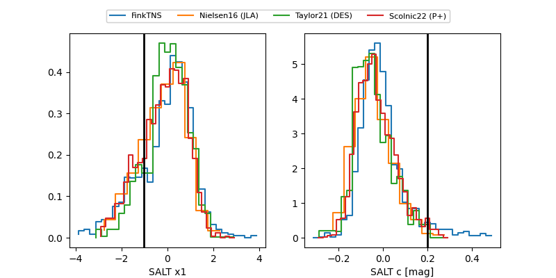

FINK: ZTF25absmqfx
Lasair: ZTF25absmqfx
ALeRCE: ZTF25absmqfx
ZTF25absmqfx (ztf,fink)
equatorial (ra, dec) = (288.1766,-16.82222)
galactic (l, b) = (20.0986,-12.17549)


last atlasc=15.94, atlaso=16.93, ztfr=19.31
2 atlasc, 8 atlaso, 1 ztfr detections